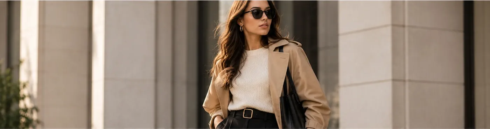

Styling
The Art of Everyday Styling: 5 Ways to Elevate a Simple Outfit
You don't need a closet full of clothes to look put together. Five easy ways to elevate the outfits you already wear.
This article contains Amazon affiliate links.

Great personal style is rarely about wearing the most complicated outfit in the room. It comes down to small choices: how a layer falls, where a color shows up, which accessory finishes the look. A few habits can make familiar favorites feel fresh again.
Here are five practical ways to make simple outfits feel more intentional, while keeping comfort and personal expression at the center.
1. Layer with confidence
Layers add depth, texture and flexibility. Try an overshirt worn open over a plain tee, a hoodie under a coat, or a light jacket over a knit. Keep the base layer comfortable and let the outer piece add shape or contrast. For balance, vary the lengths of your layers instead of stacking pieces that end at the same hemline.
2. Add one effortless accessory
Accessories change the mood of an outfit without changing the clothes. A belt sharpens a tucked-in tee, a structured bag makes casual pieces feel more deliberate, and a watch or a simple ring adds a quiet point of interest. Choose one focal accessory and let it stand out.
3. Play with color
A simple palette makes outfits easier to coordinate. Start with shades you enjoy, then add one accent for contrast. Bone, grey, stone, olive, navy and black make a dependable base — but there's no single correct palette. Choose colors that feel right on you. (Two neutrals worth comparing: bone or black.)
4. Pay attention to proportions
Think about how the shapes in an outfit work together. With a loose top, you might want a more streamlined bottom; with wide relaxed trousers, a closer-fitting tee creates contrast. These are starting points, not rules — try combinations and notice what feels comfortable and balanced.
5. Keep it personal and timeless
Trends are fun inspiration, but the most useful wardrobe fits your routine and reflects your taste. Repeat the outfits you love. Before buying something new, ask whether it works with several things you already own. And look after your clothes so they last: follow care labels, store pieces properly and fix small issues early — our cotton care guide explains how.
Make everyday style your own
Personal style is built by experimenting, repeating what works and making small changes over time. Use these ideas as inspiration, not rules. The best outfit is the one that feels comfortable, suits your day and lets you feel like yourself. Not sure where your style lands? The FORME style quiz takes two minutes.
Explore more style resources
- Victoria and Albert Museum — Textiles and Fashion: fashion history and design context.
- Encyclopaedia Britannica — Fashion industry: background on fashion and how the industry works.
FORME is a concept brand built for a graduate digital marketing course. Product links go to comparable garments sold by third parties on Amazon. They are affiliate links: as an Amazon Associate, FORME earns from qualifying purchases.